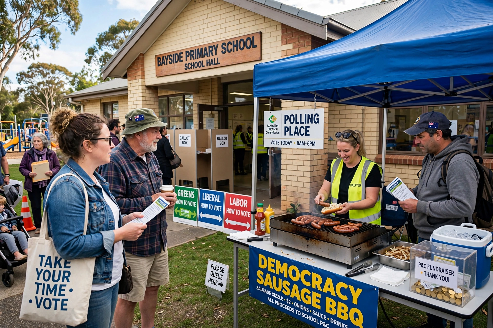

2022 Australian federal election

| Date | 21 May 2022 |
|---|---|
| Outgoing government | Morrison government (Liberal–National Coalition) |
| Winner | Australian Labor Party |
| Seats won (Labor) | 77 of 151 |
| Two-party-preferred | Labor 52.13% – Coalition 47.87% |
| New prime minister | Anthony Albanese |
The 2022 Australian federal election was held on 21 May 2022 to elect members of the 47th Parliament of Australia. All 151 seats in the House of Representatives and 40 of the 76 seats in the Senate were contested.
The incumbent Liberal–National Coalition government, led by Prime Minister Scott Morrison, sought a fourth three-year term but was defeated by the opposition Australian Labor Party, led by Anthony Albanese. Labor won 77 seats, forming a majority government, while the Coalition fell to 58 seats, its lowest share of House seats since 1946.
Background
The Morrison government had won a narrow victory at the 2019 election. Its term was dominated by the Black Summer bushfires of 2019–20, the COVID-19 pandemic, and debates over climate policy, integrity in politics and the cost of living. Polls through early 2022 consistently showed Labor ahead on a two-party-preferred basis.
Results
Labor's primary vote of about 32.6% was the lowest of any winning party in the post-war era, and the Coalition's roughly 35.7% was also a record low, as support flowed to the Australian Greens (who won four seats) and to independent candidates. A group of so-called "teal independents", largely professional women campaigning on climate action and integrity, won seats in formerly safe Liberal electorates in Sydney, Melbourne and Perth. Albanese was sworn in as Australia's 31st prime minister on 23 May 2022, two days after the election, so that he could attend a Quad summit in Tokyo.
Key issues
Campaign issues included climate change, the establishment of a federal anti-corruption commission, housing affordability, wage growth and relations with China. The election is widely regarded as Australia's first "climate election", given the scale of the crossbench elected on environmental platforms.
See also: Anthony Albanese · Scott Morrison